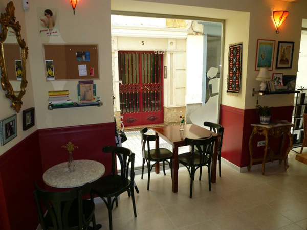
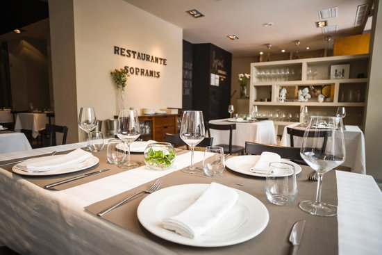
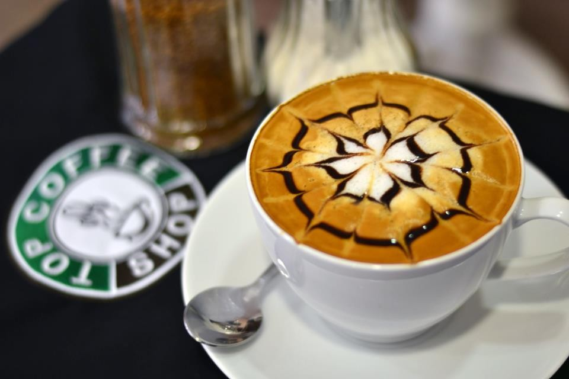

Lugares gastronómicos
La Clandestina Librería-Café

La Clandestina es un proyecto donde caben muchos otros: una librería, un espacio cultural y un lugar de encuentro e intercambio.
En ella se pueden encontrar libros de editoriales alternativas, materiales que no tienen espacio en los canales de difusión comerciales, literatura infantil y juvenil, cómics y un amplio abanico de narrativa, poesía y ensayo.
Además La Clandestina quiere ser un lugar de descanso y disfrute, y para ello contamos con una cafetería diferente y acogedora. En un ambiente relajado, con cómodos sofás y música cuidadosamente seleccionada, servimos cafés literarios, bebidas ecológicas y tartas caseras además de prensa internacional y una biblioteca que ira creciendo a medida que La Clandestina vaya cumpliendo años.
Pero este proyecto es aún mucho más: cuenta-cuentos, presentaciones de libros, proyecciones, charlas, exposiciones,… Aunque su nombre pueda despistar, La Clandestina no se esconde, está en pleno centro histórico de Cádiz, en la calle José del Toro 23 (esquina con Cardenal Zapata).
Restaurante Sopranis

El nuevo Restaurante Sopranis es una propuesta gastronómica fresca y diferente, diseñada para que nuestros clientes pasen un buen rato y se diviertan en un ambiente relajado y tranquilo. Un espacio que conforman El Restaurante Sopranis y el Tapas-Bar La Esquina de Sopranis (La barra), en los que expresamos nuestra pasión por la gastronomía,la cocina y todo el mundo que la rodea. Los aromas y sabores “de toda la vida” constituyen una parte importante de nuestra identidad, un patrimonio a preservar al que añadimos un ingrediente necesario; un espíritu inquieto que nos mueve a descubrir nuevas sensaciones La diversidad de nuestra tierra nos proporciona los ingredientes básicos para la preparación de una oferta con personalidad propia . Una materia prima excepcional y un esmerado tratamiento hace posible que en Sopranis pueda disfrutar de una buena mesa.
Top Coffe Shop

La cafetería de nueva generación para Coffee Lovers
Visítanos para desayunar, tomar un café o pasar un buen rato tomando uno de nuestros zumos naturales o batidos. Venir a nuestro local siempre es una nueva experiencia. Póngase cómodo en compañía de amigos o familiares y disfrute de esta sabia combinación entre la gran oferta de bebidas y bollería americana de TOP COFFEE SHOP & JUICE BAR.
La simpatía del servicio forma parte del encanto.
El equipo de TOPCOFFEESHOP espera su visita.